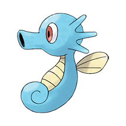

007 - Squirtle


Após o nascimento, suas costas incham e endurecem, formando uma concha. Ele exala uma espuma potente pela boca.
008 - Wartortle

A cauda longa e peluda de Wartortle é um símbolo de longevidade, por isso esse Pokémon é bastante popular entre pessoas mais velhas.
008 - Wartortle

Ele aumenta deliberadamente o peso do seu corpo para poder suportar o recuo dos jatos de água que dispara.
054 - Psyduck

Ele é constantemente atormentado por uma dor de cabeça. Quando a dor de cabeça se intensifica, ele começa a usar poderes misteriosos.
055 - Golduck

Quando ele nada em velocidade máxima usando seus longos membros palmados, sua testa de alguma forma começa a brilhar.
060 - Poliwag

O redemoinho em sua barriga é o interior aparecendo através da pele. Fica mais claro depois que Poliwag come.
061 - Poliwhirl

Suas duas pernas são bem desenvolvidas. Embora possa viver no chão, prefere viver na água.
062 - Poliwrath


Suas duas pernas são bem desenvolvidas. Embora possa viver no chão, prefere viver na água.
072 - Tentacool


Quando a maré baixa, Tentacool desidratado pode ser encontrado na praia.
073 - Tentacruel

Nas raras ocasiões em que ocorrem grandes surtos de Tentacruel, todos os Pokémon peixes desaparecem do mar ao redor.
079 - Slowpoke

É incrivelmente lento e tolo. Leva cinco segundos para sentir dor quando está sob ataque.
080 - Slowbro

Quando um Slowpoke foi caçar no mar, sua cauda foi mordida por um Shellder. Isso o fez evoluir para Slowbro.
086 - Seel

A protuberância em sua cabeça é muito dura. É usada para quebrar gelo espesso.
087 - Dewgong


Ele dorme em águas rasas do oceano durante o dia e procura comida à noite, quando está mais frio.
090 - Shellder

Ele está envolto em uma concha mais dura que diamante. Por dentro, porém, é surpreendentemente macio.
091 - Cloyster

Os cloysters que vivem em mares com fortes correntes de maré desenvolvem espinhos grandes e afiados em suas conchas.
098 - Krabby

Pode ser encontrada perto do mar. As pinças grandes voltam a crescer se forem arrancadas das órbitas.
099 - Kingler

A pinça maior tem 10.000 cavalos de potência. No entanto, é tão pesada que é difícil mirar.
116 - Horsea

Se atacado, mesmo por um inimigo grande, Horsea nada sem esforço para a segurança, utilizando sua barbatana dorsal bem desenvolvida.
117 - Seadra

O macho cria os filhotes. Se for abordado enquanto estiver cuidando deles, usará seus espinhos tóxicos para afastar o intruso.
118 - Goldeen

Suas nadadeiras dorsal, peitoral e caudal balançam elegantemente na água. Por isso é conhecido como Dançarino Aquático.
119 - Seaking

No outono, seu corpo fica mais gordinho em preparação para o pedido de casamento. Ele ganha cores lindas.
120 - Staryu

Se você visitar uma praia no final do verão, poderá ver grupos de Staryu acendendo luzes em um ritmo constante.
121 - Starmie

Este Pokémon possui um órgão conhecido como núcleo. O órgão brilha em sete cores quando Starmie libera seus poderosos poderes psíquicos.
129 - Magikarp

Um Pokémon patético e fraco. Pode pular alto em raras ocasiões, mas nunca mais de dois metros.
130 - Gyarados


Assim que aparece, ele se enfurece e permanece furioso até destruir tudo ao seu redor.
131 - Lapras

Ele transporta pessoas através do mar em suas costas. Pode cantar um canto encantador se estiver de bom humor.
134 - Vaporeon

Vive perto da água. Sua longa cauda é pontilhada por uma barbatana, frequentemente confundida com a de uma sereia.